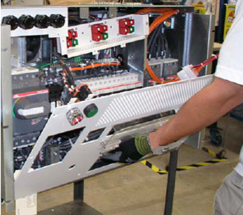
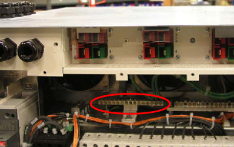
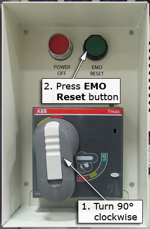
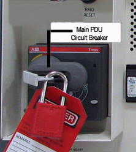

Operating Documentation
Direction 5500113, Rev# 3
Discovery MR750 3.0T Service Methods
Module Version 4.0, Version Date 7/23/10
Operating Documentation |
| Required Persons | Preliminary Reqs | Procedure | Finalization |
|---|---|---|---|
| 1 | Not Applicable | 60 mins | 5 mins |
Be sure to understand Preliminary Requirements before beginning this procedure. This document contains the method for measuring Ground Leakage Current.
| Item | Qty | Effectivity | Part# | Manufacturer | |
|---|---|---|---|---|---|
| Dale 600 or 601 (120 VAC) or Dale 600E or 601E (220 VAC) Safety Analyzer | 1 | - | 600/601: 46-285647P1 or 46-328406G1 | - | |
| - | - | - | 600E/601E: 46-285647P14 or 46-328406G2 | - | |
| Digital Volt Meter (DVM) with Jumper Leads | 1 | - | 46-194427P284 | - | |
| Personal Lock | 2 | - | 46-194427P320 | - | |
| Red Warning LOTO Tag | 2 | - | 46-194427P322 | - | |
| Multi-Locking Device (for multiple service technicians) | 1 | - | 46-194427P313 | - | |
| Personal Protective Equipment (PPE) | 1 | - | - | - | |
| ||||
| LIKELY FATAL PERSONAL INJURY! | ||||
| LETHAL VOLTAGES ARE PRESENT WITHIN THE Main Disconnect Panel (MDP) EVEN WHEN ALL MDP BREAKERS ARE OFF. | ||||
| CHECK THAT POWER AT THE MAIN DISCONNECT IS OFF, LOCKED AND TAGGED OUT BEFORE PROCEEDING. |
| Condition | Reference | Effectivity |
|---|---|---|
Ensure the Ground Resistance Checks are completed and passed. | - | - |
All cable installation is complete. | - | - |
Facility disconnect is off. | - | - |
Power Distribution Unit (PDU) secondary power circuit breakers are off. | - | - |
Main Disconnect of the PDU is on. | - | - |
All subsystem cabinet circuit breakers and subsystem power switches are on. | - | - |
No hard-wired signal cables are connected to any subsystem cabinets. Fiber-optic cables may be connected and not impact this check. | - | - |
Perform LOTO for MDP.
Dress in the appropriate personal protective clothing.
With a DVM, check that all energy has dissipated, and the PDU indicators lights are off.
Connect one clamp-type lead to the EXTERNAL jack on the top of the Dale Safety Analyzer. Connect the other clamp-type lead to the CHASSIS jack on the top of the Dale Safety Analyzer. See illustration below.
Illustration 1: Dale Safety Analyzer Connections

On the Dale Safety Analyzer, set the main selector switch to Leakage mA - External.
Connect the CHASSIS clamp-type lead to the PDU Ground Bus Bar.
| NOTE: | Observe the following:
|
| ||||
| Only connect one ground cable to the EXTERNAL clamp-type lead. If a second ground cable exists, leave it disconnected during the test. | ||||
At the PDU Bus Bar, disconnect the ground connection(s) of the subsystem cabinet being tested.
Ground leads on the PDU Bus Bar can be reached by opening the front cover of the PDU. The ground leads can be removed using appropriate deep sockets. (See both illustrations below.)
Illustration 2: PDU Cover Removal

Illustration 3: Location of PDU Bus Bar

Connect one of the ground cables disconnected in the previous step to the EXTERNAL clamp-type lead.
Turn on the facility Disconnect.
Turn on the Main PDU Circuit Breaker shown below.
Illustration 4: Main PDU Circuit Breaker

When the mode sequencing is complete (all relays stop clicking on standard PDU), turn on the circuit breakers labeled for the Gradient Cabinet.
| NOTE: | 500 mV corresponds to 500 mA of leakage current. |
Measure the leakage current.
If the subsystem cabinet under test had only one ground connection at the PDU Ground Bus Bar, verify that less than 500 mV (500 mA) is measured.
If more than 500 mV (500 mA) is measured, a second ground cable must be added between the subsystem cabinet under test and the PDU Ground Bus Bar.
If more than 5,000 mV (5,000 mA) is measured, a serious leakage current problem exists that must be corrected. Use the appropriate procedures to troubleshoot the system.
If the subsystem cabinet being tested had two ground connections at the PDU Ground Bus Bar, verify that less than 5,000 mV (5,000 mA) is measured. If more than 5000 mA is measured, a serious leakage current problem exists that must be corrected. Use the appropriate procedures to troubleshoot the system.
Turn the circuit breakers off for the Gradient Cabinet.
Turn off and LOTO the main PDU Circuit Breaker shown below.
Illustration 5: Main PDU Circuit Breaker

Turn off the facility Disconnect.
| ||||
| Some subsystem cabinets have one ground connection at the PDU Bus Bar, while other subsystem cabinets have two. If two ground connections exist, ensure that both are reconnected in the following step. | ||||
At the PDU Ground Bus Bar, reconnect the ground connection(s) of the subsystem cabinet being tested.
Perform Step 1 through Step 15 by turning on the appropriate circuit breakers for each subsystem cabinet being tested.
Restore the system:
Remove the leads from the Dale Safety Analyzer.
Turn on all PDU secondary power circuit breakers.
Close the PGR Cabinet.
Perform a Check Scan to ensure the system is ready for patient scanning.
Return to the Grounding and Leakage Current Checks or PAC Assembly Leakage Current Test.